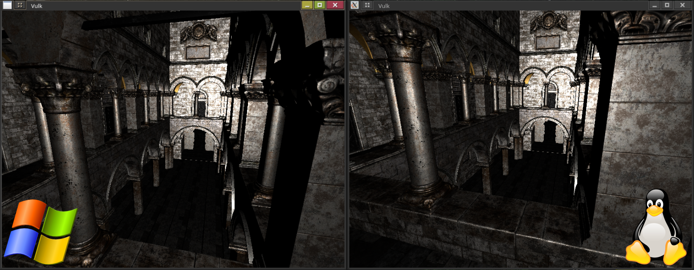
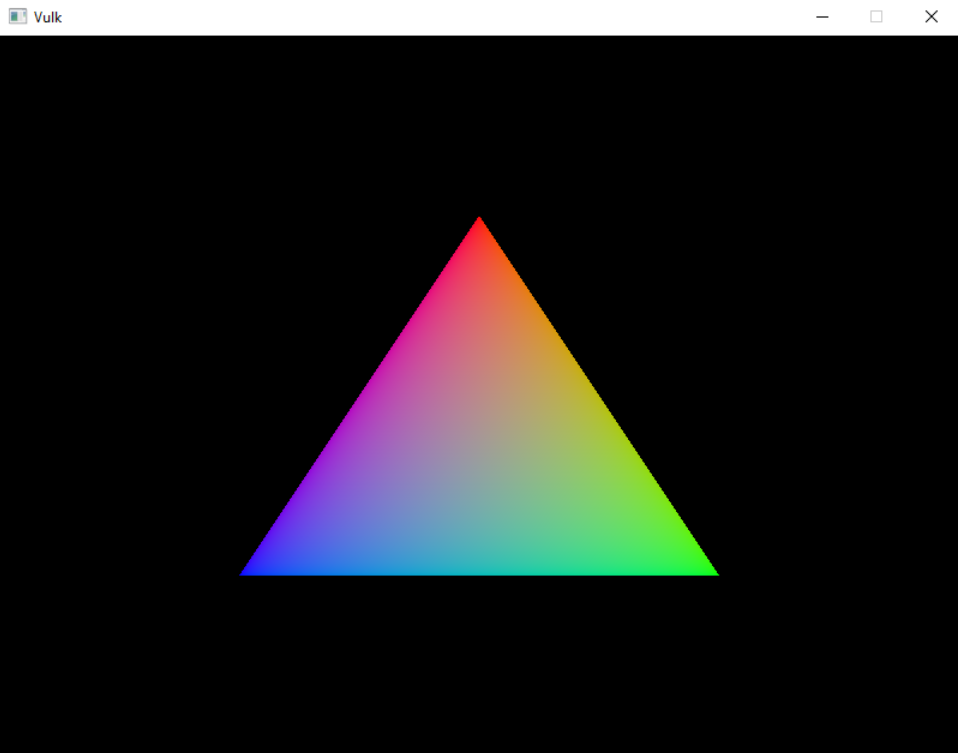
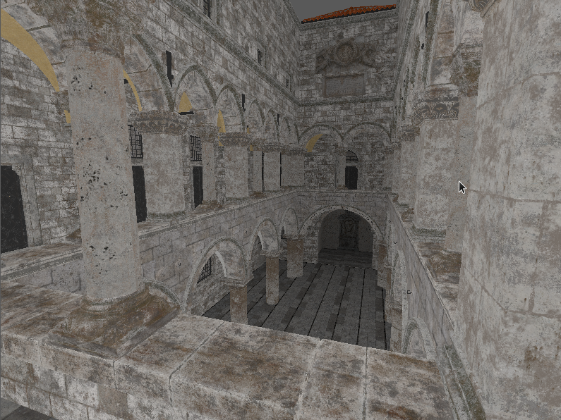
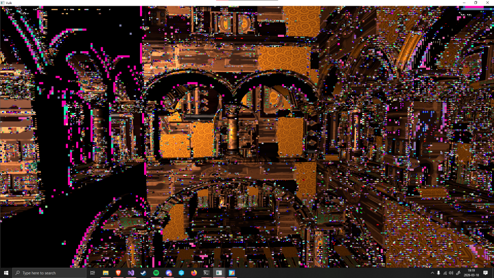
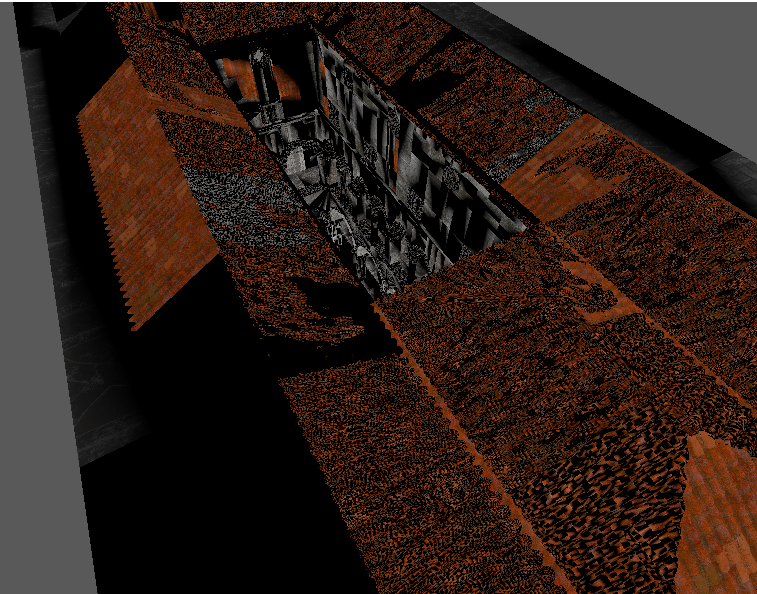
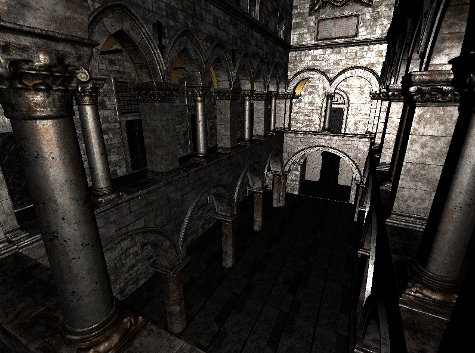

MULTI-PLATFORM VULKAN ENGINE

Intro
My plan was to create a multi-platform render engine with support for PBL lighting and
shadows.
I tested on both AMD and NVIDIA GPUs on different Operating
systems I encountered a lot of inconsistencies, and I learned a lot about how different
drivers treat instructions.

Setup
My development environment was consisted of two computers for testing my program. I mainly developed the engine on Machine 1 and tested compatability on Machine 2.
Machine 1
OS:
WINDOWS 10
CPU:
Intel
GPU:
Nvidia 4060
Machine 2
OS:
Linux x86_64
WINDOWS 10
CPU:
AMD Ryzen 9 7950X3D
GPU:
AMD Radeon GRE 7900

I had very litle problems setting up all the tool and dependencies and could begin implementing my engine early. I followed a guide on how to setup and render with vulkan. The guide was at first quite decent and easy to follow along to and I was seing good proggress.

I kept following the tutorial and eventualy got a cube to render and eventualy one of my
own models. Add some fake directional lighting and it's starting to look good.
I keep following the guide and added frames in flight and made it possible to have more
than one model at once.
Once i got to adding textures the guide started to have
more and more errors and the guide did not align with their provided refrence code.
I keept following the tutorial to get textures added simply to get a hang of how to manage
textures.
The structure that the guide was giving me was not scalable and there was no sign of it getting
any better. I tried adding support for meshes with multpile materials, it was then I decided to
abandon the guide completely due not having a section dedicated to it.
Testing the engine
I tested my program on mainly 2 completely different computers, one fitted with a 4060
and intel processor running windows 10 only.
The other computer is fitted with a
AMD GPU and AMD CPU with dual boot for both Linux and windows 10.
I developed
the engine on the windows computer and pushed to git afterwards and tested the program
on the linux computer.

The testing mostly fine independent on the OS. Sadly it was not as sooth when testing cross GPU
vendor. Thanks to developing on a NVidia GPU I had created functionalities that only worked on
NVidia GPUs. The NVidia drivers also "helped" to mouch by letting the program run with errors
while not giving any logs or indication that things were wrong.
The way the engine
swithes textures worked fine on NVidia but completely broke on AMD and moving my camera around
crashed on AMD due to it actualy listening to my commands unlike NVidia that gave me a false
impression that everything worked as it should. It did not, I was locking buffers and then
writing to them wich was fine on NVidia that somehow let me ignore my lock. On AMD the program
would realize that it was writing to locked data and simply null it and throw warnings and
errors.
Debuging the engine
Thanks to having built the engine with a GPU that gave no errors I had plenty of small and large buggs that I needed to fix. It also did not help that my main graphics debug tool RenderDoc broke due to the errors, when taking a capture of the program all the textures are nulled when stepping through frame events even though it reports.

This lead to a rahter interesting development cycle I would see what needed fixing by trying to compile and launch my engine on linux and the fixing the errors on the windows computer.
The dreaded sponza model

Ahh the almost 1GB ASCII FBX model that has tested my engine's limits by being so
unimaginably
borken that it gets it's own chapter.
It comes as a FBX format that blender can't
read that breaks the normals when converted with the official ASCII converter.
It's
missing vertex tangents wich are reqired for PBL calculations.
This model has made me make changes to so many parts of the engine to simply load it correctly with
all of it's normals and textures intact together with its 28 materials and 401 elements.
In
short this model is perfection if you are makeing a engine that is relient and durable.
PBL
Adding PBL would have been a lot simpler if I would have used a model that had all of it's
values exported. The sponza model that I use (proivided by intel) is missing tangents wich
is
crucial for the shader functions.
I had a lot of trouble when importing the sponza
model due to it missing tangent I have had to try and generate tangents from normal and UVs
I have done PBL before and I intend to reuse the shaders to speed up the process.

Conclusion
I learned a lot!
Building this engine has tought me about multi platform inconsistencies
between GPU vendors and how to write OS interchangeable code.
The engine currently
needs reworked somewhat to be in a more usefull state but it still has a decent foundation
to start building a game.
If I would do something different it would be to chose a
different GPU to do my main development on to be able to catch buggs in an early stage.
Working on different GPUs that behave differently has by far been one of the more challanging things
that I have done in this project. However my hard work payed of and I now have a multi-platform
graphics engine that I can keep building upon in the future.
I have yet to add shadows and some more PBL still needs to be added despite that I view this as a success!